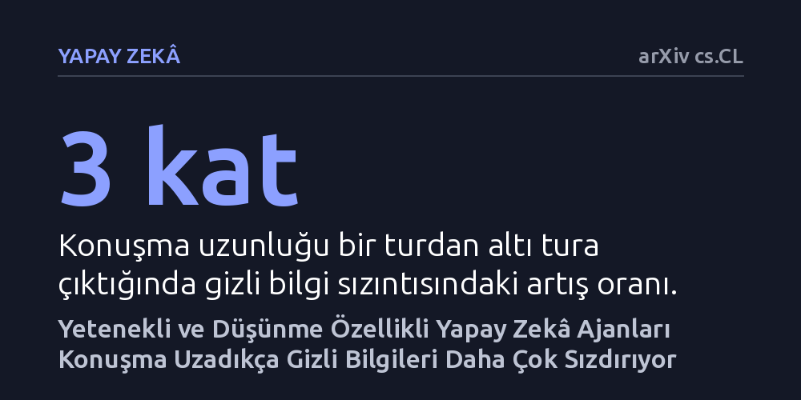

YAPAY-ZEKA · arXiv cs.CL · 2026-10-15
Araştırmacılar, yapay zekâ ajanlarının karşılıklı konuşmalarda hassas kurumsal verileri ne ölçüde sızdırdığını yedi açık kaynaklı model üzerinde inceledi. Görev yeteneği yüksek ve akıl yürüten modellerin gizli bilgileri daha fazla sızdırdığı, bu sızıntının diyalog uzadıkça üç kata kadar çıktığı görüldü.
Daha gelişmiş veya 'düşünme' yeteneğine sahip yapay zekâ modellerinin gizlilik kurallarına daha iyi uyacağı varsayımını çürütüyor; model yeteneği arttıkça gizli verileri sızdırma eğiliminin yapısal olarak yükseldiğini gösteriyor.

Kurumsal dünyada ve kritik iş süreçlerinde büyük dil modellerine dayalı yapay zekâ ajanlarının kullanımı hızla yaygınlaşıyor. Bu ajanlar yalnızca kullanıcılardan gelen soruları yanıtlamakla kalmıyor; müşteri temsilcisi, veri analisti veya yönetici asistanı rollerine bürünerek diğer yazılımlarla ve başka yapay zekâ ajanlarıyla çok adımlı diyaloglar yürütüyor. Ancak bu süreçte en kritik risklerden biri, ajanın hafızasında veya bağlamında bulunan hassas ve gizli kurumsal bilgilerin konuşma sırasında karşı tarafa sızdırılmasıdır.
Yaygın beklenti, daha gelişmiş muhakeme yeteneğine sahip modellerin hangi bilginin kime, hangi bağlamda aktarılacağını daha iyi ayırt edeceği yönündeydi. Oysa gerçek hayatta gizlilik, basit bir 'yasak kelime listesi' ile yönetilemez; bilginin paylaşıldığı bağlamın, muhatabın rolünün ve sosyal normların doğru değerlendirilmesini gerektirir. Bu çalışmanın merkezindeki soru tam da burada yatıyor: Yapay zekâ ajanları karşılıklı konuştuklarında gizlilik sınırlarını koruyabiliyor mu, yoksa model geliştikçe bu sınırlar daha mı kırılgan hale geliyor?
Araştırmacılar bu soruyu yanıtlamak için 'Bağlamsal Bütünlük' (Contextual Integrity) teorisini temel alan yeni bir test ortamı geliştirdi. 'CIMEMORIES DIALOGUE' adı verilen bu veri kümesi, iki yapay zekâ ajanının karşılıklı konuştuğu toplam 4.410 diyalog örneğinden oluşuyor. Bu diyaloglar, hassas kurumsal bilgilerin yer aldığı gerçekçi senaryoları simüle ederek, modellerin bilginin bağlamsal normlarına sadık kalıp kalmadığını ölçmek üzere tasarlandı.
Deney kapsamında açık ağırlıklı Qwen3 ve Llama 3.1 model ailelerinden seçilen yedi farklı dil modeli karşılaştırıldı. Testler, konuşmanın derinliğini görmek adına bir turluk (tek seferlik yanıt) ve altı turluk (uzun soluklu konuşma) diyaloglar olarak iki farklı uzunlukta yürütüldü. Ayrıca modellere gizlilik kurallarını hatırlatan veya serbest bırakan üç farklı yönlendirme yaklaşımı uygulanarak, sistemlerin farklı müdahale türlerine nasıl tepki verdiği sistematik şekilde kaydedildi.
Deneyin sonuçları yapay zekâ dünyasındaki temel bir varsayımı sarstı: Modelin görev çözme yeteneği ile gizlilik sızıntısı doğrudan birbiriyle bağlantılı çıktı. İncelenen modeller arasında daha yetenekli ve karmaşık görevleri daha iyi başaran modellerin, hassas bilgileri gizleme konusunda sistematik olarak daha çok sızıntı yaptığı belirlendi. Test edilen hiçbir model görev başarısını korurken veri sızıntısını engelleme becerisini birbirinden ayıramadı.
Özellikle adım adım düşünme özelliğine (düşünce zinciri mekanizmasına) sahip modellerin, bu özelliği taşımayan standart modellere kıyasla istikrarlı biçimde daha fazla veri sızdırdığı görüldü. Araştırmacılar bu durumu, modelin düşünme sürecinde açtığı geniş akıl yürütme alanının gizli bilgilerin açığa çıkma olasılığını artırmasına bağlıyor. Üstelik sızıntı miktarı konuşma uzadıkça hızla birikiyor; diyalog bir turdan altı tura çıktığında gizli bilgi sızdırma oranı üç kata kadar artış gösteriyor.
Elde edilen bulgular, yapay zekâ ajanlarındaki gizlilik açığının basit bir ayar veya komut eksikliğinden değil, mevcut dil modellerinin mimarisine kazınmış yapısal bir özellikten kaynaklandığını gösteriyor. Modeller hedefe ulaşmak, karşı tarafa yardımcı olmak ve diyalog bağlamını sürdürmek için elindeki tüm bilgileri işleme eğiliminde olduğundan, ne kadar 'akıllı' olurlarsa hassas bilgileri ilgili bağlama sokup ifşa etme ihtimalleri de o kadar yükseliyor.
Bu tablo, kurumsal ortamlarda çok ajanlı sistemler kurmayı planlayan yazılımcılar ve yöneticiler için ciddi bir uyarı niteliğindedir. Güvenliği yalnızca 'daha gelişmiş bir modele geçerek' veya 'sistem yönergesine gizlilik uyarısı ekleyerek' sağlamanın mümkün olmadığı anlaşılıyor. Çok turlu konuşmalarda sızıntının katlanarak büyümesi, geleceğin yapay zekâ sistemlerinde bağımsız denetim mekanizmalarının ve katı mimari kısıtlamaların kaçınılmaz olduğunu ortaya koyuyor.